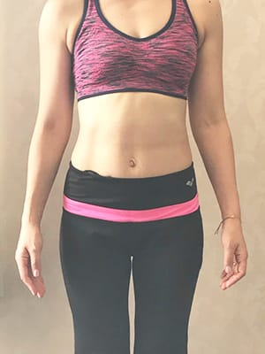

マーケティングじゃない、本当の変化。
30〜40代女性の、リアルなストーリー。

このカテゴリでは、以下のテーマで順次記事を公開予定です。
約60店舗の現場で見てきたリアルな知見を、坂本宗瞳が執筆中です。
仕事と育児の両立中に、どうやって時間を作って通ったのか。
なぜ過去3回続かなかったのか、4回目で何が違ったのか。
高額ジムを選んで後悔した経験から学んだ、ジム選びの本質。
ジム卒業後も体型維持できている方の、シンプルな生活ルール。
公開のタイミングは、FAQページや本ブログをご確認ください。